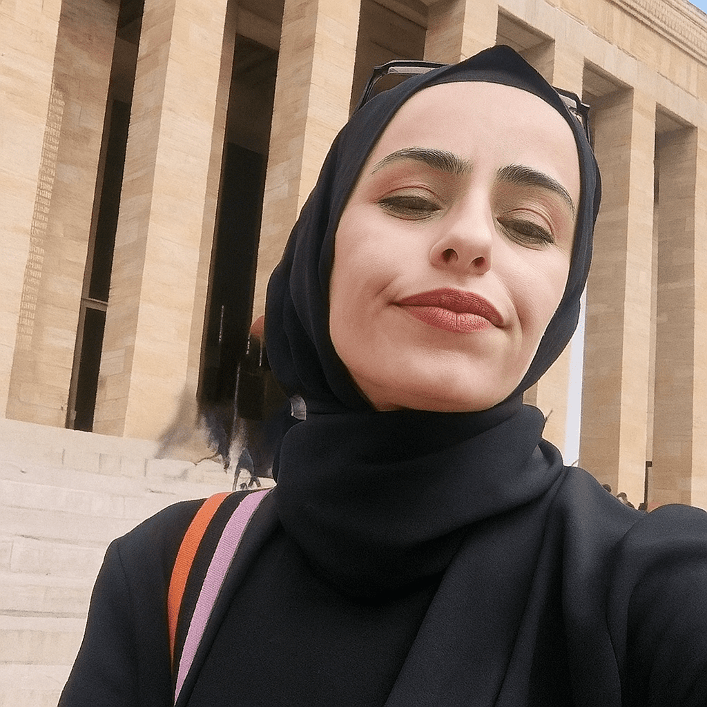

Neslihan Çelik
Veri ve Yapay Zeka ile Geleceği İnşa Ediyoruz.
✨ Hakkımda
📊
Veri Analizi
Büyük veri setlerinden anlamlı içgörüler ve stratejik modelleme.
🧠
AI & Yazılım
Machine Learning çözümleri ve akıllı web uygulamaları.